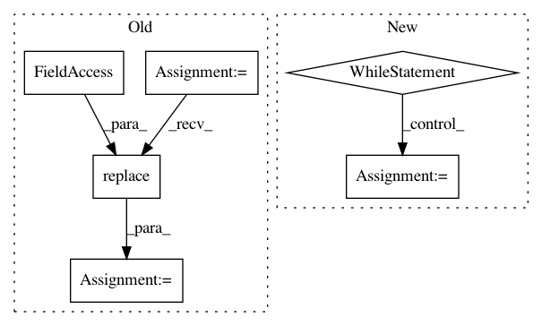

35f0270688d2bd1e31e45ebbc1771f1ff940bff6,homeassistant/components/sun.py,Sun,update_as_of,#Sun#Any#,168
Before Change
def update_as_of(self, utc_point_in_time):
Calculate sun state at a point in UTC time.
sun = ephem.Sun() // pylint: disable=no-member
// pylint: disable=assigning-non-slot
self.observer.date = ephem.date(utc_point_in_time)
self.next_rising = self.observer.next_rising(
sun,
start=utc_point_in_time).datetime().replace(tzinfo=dt_util.UTC)
self.next_setting = self.observer.next_setting(
sun,
start=utc_point_in_time).datetime().replace(tzinfo=dt_util.UTC)
After Change
mod += 1
mod = -1
while True:
next_setting_dt = (self.astral.sunset_utc(
utc_point_in_time +
timedelta(days=mod), self.latitude, self.longitude))
if next_setting_dt > utc_point_in_time:
break
mod += 1
self.next_rising = next_rising_dt
self.next_setting = next_setting_dt
def point_in_time_listener(self, now):
In pattern: SUPERPATTERN
Frequency: 3
Non-data size: 6
Instances
Project Name: home-assistant/home-assistant
Commit Name: 35f0270688d2bd1e31e45ebbc1771f1ff940bff6
Time: 2015-07-16
Author: paulus@paulusschoutsen.nl
File Name: homeassistant/components/sun.py
Class Name: Sun
Method Name: update_as_of
Project Name: home-assistant/home-assistant
Commit Name: 35f0270688d2bd1e31e45ebbc1771f1ff940bff6
Time: 2015-07-16
Author: paulus@paulusschoutsen.nl
File Name: tests/test_component_sun.py
Class Name: TestSun
Method Name: test_setting_rising
Project Name: pyinstaller/pyinstaller
Commit Name: 121ef1b8168a1c0b155b59aeead314186aa702fc
Time: 2015-09-03
Author: h.goebel@crazy-compilers.com
File Name: PyInstaller/depend/utils.py
Class Name:
Method Name: get_path_to_egg